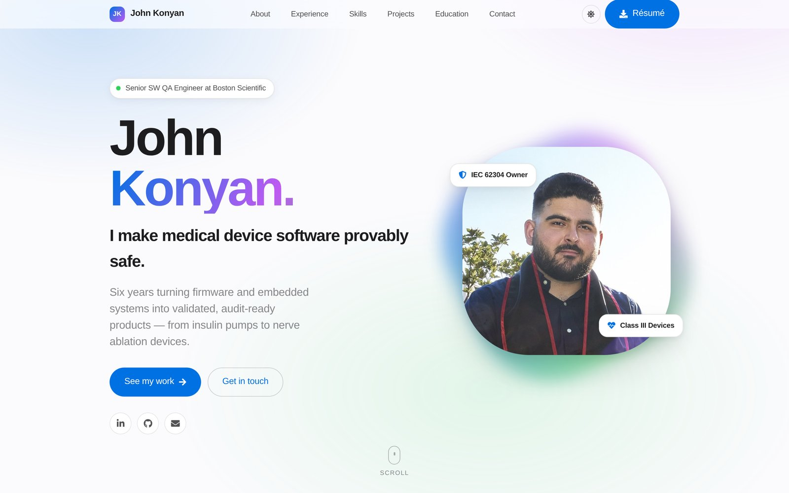

Verification & Validation
Full lifecycle ownership — test planning, design, execution, and traceability for production software releases.
I make medical device software provably safe.
Six years turning firmware and embedded systems into validated, audit-ready products — from insulin pumps to nerve ablation devices.
I'm a Senior Software QA Engineer working on devices where a defect is not an inconvenience — it's a patient safety event.
I graduated from California State University, Northridge with a B.S. in Computer Science and went straight into regulated medical software. At Medtronic I owned the IEC 62304 software lifecycle and validated embedded insulin pump systems under FDA 21 CFR Part 820. Today, at Boston Scientific, I lead design quality assurance for a newly acquired Basivertebral Nerve ablation platform and coordinate requirements across international teams.
Outside of work I'm usually under the hood of a car. It's the same instinct that drives my engineering: take it apart, find out exactly why it behaves the way it does, and don't stop until it's right.
Full lifecycle ownership — test planning, design, execution, and traceability for production software releases.
IEC 62304, ISO 13485, ISO 14971 and FDA 21 CFR Part 820 — built into the process, not bolted on before an audit.
White box testing of device firmware, catching logic errors before they reach hardware in the field.
Reusable test scripts and libraries that cut time-to-test on regression suites for the whole team.
Six years across Class III medical devices and public infrastructure — always at the point where software meets something real.
Boston Scientific · Valencia, CA
Medtronic · Northridge, CA · Promoted twice
Department of Beaches and Harbors · Marina Del Rey, CA
Side projects where I get to design, write and ship the whole thing myself.
A Flask web app born out of my love of cars. It searches a database of 5,000 vehicles to help users pin down the exact BMW trim they're after.

A hand-built, fully responsive single page deployed on GitHub Pages — scroll animations, light and dark appearance, and a working contact form with no backend.
A business website for a hookah catering company, built with Claude Code. Guests build their own package and send an inquiry straight to the owner.
Graduate program — currently enrolled
California State University, Northridge
Open to conversations about software quality, medical devices, and anything with an engine in it.